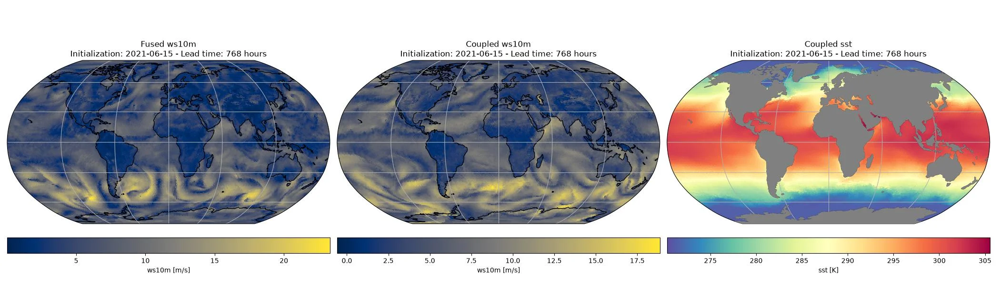

Running DLESyM Inference¶
DLESyM under Pipeline, fused and as coupled atmosphere and ocean components.
DLESyM is a global earth system model with an atmosphere that advances every
6 hours and an ocean that advances every 48 hours, both on a HEALPix nside=64
(approximately 1 degree) grid. The fused
earth2studio.models.px.DLESyM model steps both
inside one 96-hour cycle and returns every atmosphere lead time, with the ocean
valid only at its own. This example runs the model in two ways:
- fused, as any other prognostic model under
[
earth2studio.run.Pipeline][], which rolls it out with aPrognosticRunnerand writes one store; - as the standalone
earth2studio.models.px.DLESyMAtmosandearth2studio.models.px.DLESyMOceancomponents under [earth2studio.coupling.CoupledRunner][], where the sea surface temperature and the 48-hour atmospheric means the two halves exchange pass through explicit [earth2studio.coupling.Connector][] edges, and each component writes its own stream at its own cadence.
In this example you will learn:
- How to instantiate DLESyM and run it from a lat/lon data source with
Pipeline - How the model's recommended source serves its native HEALPix inputs from ERA5
- How to load the atmosphere and ocean as standalone components
- How to declare the coupling with connectors, read the derived schedule and run it
under
Pipelinewith one store per component - How to regrid the native outputs for plotting
Set Up¶
DLESyM runs on the HEALPix grid and takes derived variables (ws10m from the
wind components and tau300-700 from geopotential) that no data source provides.
Models never fetch data, so the preparation belongs in a source: the model
recommends DLESyMInputSource, which fetches the base variables from a lat/lon
source, ARCO ERA5 by default, computes the derived variables, fills the sea surface
temperature over land and regrids onto HEALPix. To initialize from another lat/lon
source, wrap it: DLESyMInputSource(WB2ERA5(), nside=model.nside).
- Prognostic Model:
earth2studio.models.px.DLESyM - Datasource:
earth2studio.data.ARCO_ERA5, through the model's recommendedDLESyMInputSource - IO Backend:
earth2studio.io.KVBackend, in memory
import os
os.makedirs("outputs", exist_ok=True)
from dotenv import load_dotenv
load_dotenv() # TODO: make common example prep function
import numpy as np
import torch
from earth2studio.io import KVBackend
from earth2studio.models.px import DLESyM, DLESyMAtmos, DLESyMOcean
from earth2studio.run import Pipeline, work_items
device = "cuda"
if not torch.cuda.is_available():
raise RuntimeError("GPU/CUDA required for DLESyM")
package = DLESyM.load_default_package()
model = DLESyM.load_model(package).to(device)
in_coords = model.input_coords()
print("Input variables:", list(in_coords["variable"].values))
print("Input lead times [h]:", in_coords["lead_time"].values.astype("timedelta64[h]"))
out_coords = model.output_coords(in_coords)
print("Output variables:", list(out_coords["variable"].values))
print("Output lead times [h]:", out_coords["lead_time"].values.astype("timedelta64[h]"))
print("Recommended source:", type(model.default_sources()).__name__)
Console output37 lines
Downloading config.yaml: 0%| | 0.00/955 [00:00<?, ?B/s]
Downloading config.yaml: 100%|██████████| 955/955 [00:00<00:00, 5.31kB/s]
Downloading config.yaml: 100%|██████████| 955/955 [00:00<00:00, 5.27kB/s]
Downloading config.yaml: 0%| | 0.00/1.50k [00:00<?, ?B/s]
Downloading config.yaml: 100%|██████████| 1.50k/1.50k [00:00<00:00, 9.96kB/s]
Downloading config.yaml: 100%|██████████| 1.50k/1.50k [00:00<00:00, 9.85kB/s]
Downloading hpx_lat.npy: 0%| | 0.00/384k [00:00<?, ?B/s]
Downloading hpx_lat.npy: 100%|██████████| 384k/384k [00:00<00:00, 559kB/s]
Downloading hpx_lat.npy: 100%|██████████| 384k/384k [00:00<00:00, 557kB/s]
Downloading hpx_lon.npy: 0%| | 0.00/384k [00:00<?, ?B/s]
Downloading hpx_lon.npy: 100%|██████████| 384k/384k [00:00<00:00, 1.01MB/s]
Downloading hpx_lon.npy: 100%|██████████| 384k/384k [00:00<00:00, 1.00MB/s]
Downloading atmos_model_0.mdlus: 0%| | 0.00/19.7M [00:00<?, ?B/s]
Downloading atmos_model_0.mdlus: 51%|█████ | 10.0M/19.7M [00:00<00:00, 12.6MB/s]
Downloading atmos_model_0.mdlus: 100%|██████████| 19.7M/19.7M [00:00<00:00, 23.8MB/s]
Downloading atmos_model_0.mdlus: 100%|██████████| 19.7M/19.7M [00:00<00:00, 20.7MB/s]
Downloading ocean_model_0.mdlus: 0%| | 0.00/18.6M [00:00<?, ?B/s]
Downloading ocean_model_0.mdlus: 54%|█████▎ | 10.0M/18.6M [00:00<00:00, 11.6MB/s]
Downloading ocean_model_0.mdlus: 100%|██████████| 18.6M/18.6M [00:01<00:00, 19.4MB/s]
Downloading land_sea_mask.npy: 0%| | 0.00/192k [00:00<?, ?B/s]
Downloading land_sea_mask.npy: 100%|██████████| 192k/192k [00:00<00:00, 337kB/s]
Downloading land_sea_mask.npy: 100%|██████████| 192k/192k [00:00<00:00, 335kB/s]
Downloading topography.npy: 0%| | 0.00/192k [00:00<?, ?B/s]
Downloading topography.npy: 100%|██████████| 192k/192k [00:00<00:00, 517kB/s]
Downloading topography.npy: 100%|██████████| 192k/192k [00:00<00:00, 516kB/s]
Input variables: ['z500', 'tau300-700', 'z1000', 't2m', 'tcwv', 't850', 'z250', 'ws10m', 'ttr03', 'sst']
Input lead times [h]: [-48 -42 -36 -30 -24 -18 -12 -6 0]
Output variables: ['z500', 'tau300-700', 'z1000', 't2m', 'tcwv', 't850', 'z250', 'ws10m', 'ttr03', 'tp06', 'msl', 'sst']
Output lead times [h]: [ 6 12 18 24 30 36 42 48 54 60 66 72 78 84 90 96]
Recommended source: DLESyMInputSourceThe Fused Model Under Pipeline¶
A Pipeline drives a runner over work items. Pipeline.from_model wraps the
prognostic model in a PrognosticRunner that fetches the initial history from the
model's recommended source, rolls the model forward and writes every step into the
store. One DLESyM step is a 96-hour cycle, so the final lead time is a multiple of
96 hours.
Only the fields named in output_variables are written, on the native HEALPix
grid. The ocean's sst is valid at 48-hour lead times only: the fused model fills
the other lead times with NaNs, because its one output slot carries the atmosphere's
lead times.
ic_date = np.datetime64("2021-06-15")
n_cycles = 8 # 8 cycles of 96 hours: 32 days
items = work_items([ic_date], final_lead_time=np.timedelta64(96 * n_cycles, "h"))
fused = KVBackend()
Pipeline.from_model(
model,
output={"forecast": fused},
output_variables={"forecast": ["ws10m", "sst"]},
device=device,
).run(items)
fused_ds = fused.to_xarray()
print(fused_ds)
valid_sst = fused_ds["sst"].notnull().any(["face", "height", "width"]).squeeze("time")
print(
"Lead times with valid sst [h]:",
fused_ds["lead_time"].values[valid_sst.values].astype("timedelta64[h]"),
)
Console output106 lines
Fetching ARCO_ERA5 data: 0%| | 0/8 [00:00<?, ?it/s]
Fetching ARCO_ERA5 data: 25%|██▌ | 2/8 [00:00<00:00, 13.42it/s]
Fetching ARCO_ERA5 data: 50%|█████ | 4/8 [00:00<00:00, 9.33it/s]
Fetching ARCO_ERA5 data: 75%|███████▌ | 6/8 [00:00<00:00, 7.83it/s]
Fetching ARCO_ERA5 data: 88%|████████▊ | 7/8 [00:01<00:00, 2.76it/s]
Fetching ARCO_ERA5 data: 100%|██████████| 8/8 [00:02<00:00, 2.86it/s]
Fetching ARCO_ERA5 data: 100%|██████████| 8/8 [00:02<00:00, 3.79it/s]
Fetching ARCO_ERA5 statistics: 0it [00:00, ?it/s]
Fetching ARCO_ERA5 statistics: 0it [00:00, ?it/s]
Fetching ARCO_ERA5 data: 0%| | 0/8 [00:00<?, ?it/s]
Fetching ARCO_ERA5 data: 25%|██▌ | 2/8 [00:00<00:00, 7.24it/s]
Fetching ARCO_ERA5 data: 62%|██████▎ | 5/8 [00:00<00:00, 10.24it/s]
Fetching ARCO_ERA5 data: 88%|████████▊ | 7/8 [00:01<00:00, 4.15it/s]
Fetching ARCO_ERA5 data: 100%|██████████| 8/8 [00:01<00:00, 3.31it/s]
Fetching ARCO_ERA5 data: 100%|██████████| 8/8 [00:01<00:00, 4.09it/s]
Fetching ARCO_ERA5 statistics: 0it [00:00, ?it/s]
Fetching ARCO_ERA5 statistics: 0it [00:00, ?it/s]
Fetching ARCO_ERA5 data: 0%| | 0/8 [00:00<?, ?it/s]
Fetching ARCO_ERA5 data: 12%|█▎ | 1/8 [00:00<00:00, 7.74it/s]
Fetching ARCO_ERA5 data: 38%|███▊ | 3/8 [00:00<00:00, 7.11it/s]
Fetching ARCO_ERA5 data: 62%|██████▎ | 5/8 [00:00<00:00, 10.16it/s]
Fetching ARCO_ERA5 data: 88%|████████▊ | 7/8 [00:01<00:00, 3.17it/s]
Fetching ARCO_ERA5 data: 100%|██████████| 8/8 [00:01<00:00, 3.57it/s]
Fetching ARCO_ERA5 data: 100%|██████████| 8/8 [00:01<00:00, 4.17it/s]
Fetching ARCO_ERA5 statistics: 0it [00:00, ?it/s]
Fetching ARCO_ERA5 statistics: 0it [00:00, ?it/s]
Fetching ARCO_ERA5 data: 0%| | 0/8 [00:00<?, ?it/s]
Fetching ARCO_ERA5 data: 38%|███▊ | 3/8 [00:00<00:00, 12.81it/s]
Fetching ARCO_ERA5 data: 62%|██████▎ | 5/8 [00:00<00:00, 8.78it/s]
Fetching ARCO_ERA5 data: 88%|████████▊ | 7/8 [00:01<00:00, 3.04it/s]
Fetching ARCO_ERA5 data: 100%|██████████| 8/8 [00:02<00:00, 3.14it/s]
Fetching ARCO_ERA5 data: 100%|██████████| 8/8 [00:02<00:00, 3.82it/s]
Fetching ARCO_ERA5 statistics: 0it [00:00, ?it/s]
Fetching ARCO_ERA5 statistics: 0it [00:00, ?it/s]
Fetching ARCO_ERA5 data: 0%| | 0/8 [00:00<?, ?it/s]
Fetching ARCO_ERA5 data: 25%|██▌ | 2/8 [00:00<00:00, 7.09it/s]
Fetching ARCO_ERA5 data: 50%|█████ | 4/8 [00:00<00:00, 9.23it/s]
Fetching ARCO_ERA5 data: 62%|██████▎ | 5/8 [00:00<00:00, 9.41it/s]
Fetching ARCO_ERA5 data: 88%|████████▊ | 7/8 [00:01<00:00, 3.08it/s]
Fetching ARCO_ERA5 data: 100%|██████████| 8/8 [00:01<00:00, 3.55it/s]
Fetching ARCO_ERA5 data: 100%|██████████| 8/8 [00:01<00:00, 4.27it/s]
Fetching ARCO_ERA5 statistics: 0it [00:00, ?it/s]
Fetching ARCO_ERA5 statistics: 0it [00:00, ?it/s]
Fetching ARCO_ERA5 data: 0%| | 0/8 [00:00<?, ?it/s]
Fetching ARCO_ERA5 data: 12%|█▎ | 1/8 [00:00<00:00, 9.16it/s]
Fetching ARCO_ERA5 data: 25%|██▌ | 2/8 [00:00<00:00, 6.55it/s]
Fetching ARCO_ERA5 data: 50%|█████ | 4/8 [00:00<00:00, 7.58it/s]
Fetching ARCO_ERA5 data: 88%|████████▊ | 7/8 [00:01<00:00, 3.48it/s]
Fetching ARCO_ERA5 data: 100%|██████████| 8/8 [00:01<00:00, 3.59it/s]
Fetching ARCO_ERA5 data: 100%|██████████| 8/8 [00:01<00:00, 4.02it/s]
Fetching ARCO_ERA5 statistics: 0it [00:00, ?it/s]
Fetching ARCO_ERA5 statistics: 0it [00:00, ?it/s]
Fetching ARCO_ERA5 data: 0%| | 0/8 [00:00<?, ?it/s]
Fetching ARCO_ERA5 data: 12%|█▎ | 1/8 [00:00<00:01, 6.81it/s]
Fetching ARCO_ERA5 data: 38%|███▊ | 3/8 [00:00<00:00, 12.36it/s]
Fetching ARCO_ERA5 data: 75%|███████▌ | 6/8 [00:00<00:00, 7.88it/s]
Fetching ARCO_ERA5 data: 88%|████████▊ | 7/8 [00:01<00:00, 2.90it/s]
Fetching ARCO_ERA5 data: 100%|██████████| 8/8 [00:02<00:00, 2.54it/s]
Fetching ARCO_ERA5 data: 100%|██████████| 8/8 [00:02<00:00, 3.38it/s]
Fetching ARCO_ERA5 statistics: 0it [00:00, ?it/s]
Fetching ARCO_ERA5 statistics: 0it [00:00, ?it/s]
Fetching ARCO_ERA5 data: 0%| | 0/8 [00:00<?, ?it/s]
Fetching ARCO_ERA5 data: 38%|███▊ | 3/8 [00:00<00:00, 29.86it/s]
Fetching ARCO_ERA5 data: 75%|███████▌ | 6/8 [00:00<00:00, 12.42it/s]
Fetching ARCO_ERA5 data: 100%|██████████| 8/8 [00:01<00:00, 3.30it/s]
Fetching ARCO_ERA5 data: 100%|██████████| 8/8 [00:01<00:00, 4.35it/s]
Fetching ARCO_ERA5 statistics: 0it [00:00, ?it/s]
Fetching ARCO_ERA5 statistics: 0it [00:00, ?it/s]
Fetching ARCO_ERA5 data: 0%| | 0/8 [00:00<?, ?it/s]
Fetching ARCO_ERA5 data: 12%|█▎ | 1/8 [00:00<00:01, 3.74it/s]
Fetching ARCO_ERA5 data: 25%|██▌ | 2/8 [00:00<00:01, 4.16it/s]
Fetching ARCO_ERA5 data: 88%|████████▊ | 7/8 [00:02<00:00, 3.44it/s]
Fetching ARCO_ERA5 data: 100%|██████████| 8/8 [00:02<00:00, 3.66it/s]
Fetching ARCO_ERA5 data: 100%|██████████| 8/8 [00:02<00:00, 3.64it/s]
Fetching ARCO_ERA5 statistics: 0it [00:00, ?it/s]
Fetching ARCO_ERA5 statistics: 0it [00:00, ?it/s]
2026-11-19 20:51:56.784 | INFO | earth2studio.run.pipeline:_log_finished:536 - Rank 0: finished work item 1/1 (time 2021-06-15T00:00:00, final_lead_time 2764800 seconds)
<xarray.Dataset> Size: 51MB
Dimensions: (time: 1, lead_time: 129, face: 12, height: 64, width: 64)
Coordinates:
* time (time) datetime64[ns] 8B 2021-06-15
* lead_time (lead_time) timedelta64[ns] 1kB 0 days 00:00:00 ... 32 days 00...
* face (face) int64 96B 0 1 2 3 4 5 6 7 8 9 10 11
* height (height) int64 512B 0 1 2 3 4 5 6 7 8 ... 56 57 58 59 60 61 62 63
* width (width) int64 512B 0 1 2 3 4 5 6 7 8 ... 56 57 58 59 60 61 62 63
Data variables:
ws10m (time, lead_time, face, height, width) float32 25MB 7.433 ... ...
sst (time, lead_time, face, height, width) float32 25MB 271.5 ... ...
Lead times with valid sst [h]: [ 0 48 96 144 192 240 288 336 384 432 480 528 576 624 672 720 768]The Atmosphere and Ocean as Components¶
A fused model whose outputs advance at different cadences cannot be coupled as it
is. DLESyMAtmos and DLESyMOcean are the atmosphere and ocean as two ordinary
prognostic models on the native HEALPix grid. Each loads only its own network from
the same package, like any other model, and declares its own slots:
- The atmosphere takes its 6-hourly history and, as forcing, the sea surface temperature at the history's final lead time. In the fused model this is the SST at the start of each cycle, the ocean's previous output.
- The ocean takes its history at -48 h and 0 h and, as forcing, the means of
z1000andws10mover the 48 hours of atmosphere frames leading up to each of its output times, declared as qualified labels such asz1000:mean:48h. In the fused model these are averages of the atmosphere's frames from the same cycle.
The coupler reads these declarations; nothing in it knows about DLESyM.
from earth2studio.coupling import Connector, CoupledRunner
# The fused model is no longer needed: free its copy of the two networks.
del model
torch.cuda.empty_cache()
atmos = DLESyMAtmos.load_model(package).to(device)
ocean = DLESyMOcean.load_model(package).to(device)
def hours(coords):
"""Lead times of a signature in whole hours."""
return coords["lead_time"].values.astype("timedelta64[h]")
def print_slots(name, component):
"""Print a component's slots, as declared."""
inputs, forcing = component.input_coords(), component.forcing_coords()
outputs = component.output_coords(inputs)
print(f"{name} input: {list(inputs['variable'].values)} at {hours(inputs)}")
print(f"{name} forcing: {list(forcing['variable'].values)} at {hours(forcing)}")
print(f"{name} output: {list(outputs['variable'].values)} at {hours(outputs)}")
print_slots("atmos", atmos)
print_slots("ocean", ocean)
Console output6 lines
atmos input: ['z500', 'tau300-700', 'z1000', 't2m', 'tcwv', 't850', 'z250', 'ws10m', 'ttr03'] at [-18 -12 -6 0]
atmos forcing: ['sst'] at [0]
atmos output: ['z500', 'tau300-700', 'z1000', 't2m', 'tcwv', 't850', 'z250', 'ws10m', 'ttr03', 'tp06', 'msl'] at [ 6 12 18 24 30 36 42 48 54 60 66 72 78 84 90 96]
ocean input: ['sst'] at [-48 0]
ocean forcing: ['z1000:mean:48h', 'ws10m:mean:48h'] at [48 96]
ocean output: ['sst'] at [48 96]Declaring the Coupling¶
Components are named models and connectors are edges between them. Both components are on the same HEALPix grid, so no regridder is needed.
- The ocean feeds the atmosphere's SST slot with
time="hold": the atmosphere takes the latest SST the ocean published before the cycle, which is what the fused model does. Withexactthe two would wait for each other, and the runner would report the cycle when built. - The atmosphere feeds the ocean's window means with the default
exacttiming: the coupler reduces the atmosphere's 6-hourly frames over each 48-hour window.
Every slot not fed by a connector, here the two histories, is fetched from its
source. The components recommend the same DLESyMInputSource over ARCO ERA5 as the
fused model, so no sources= is needed; pass
sources={"atmos": source, "ocean": source} to initialize from another one.
Construction validates the declarations and dry-runs the schedule, and describe
prints it: each row is a call, when it is due, what it publishes and where each
connected slot reads from.
runner = CoupledRunner(
{"atmos": atmos, "ocean": ocean},
[
Connector("ocean", "atmos", time="hold"),
Connector("atmos", "ocean"),
],
)
print(runner.describe(np.timedelta64(192, "h")))
Console output13 lines
Components:
atmos stateful every 96h
ocean stateful every 96h
Connectors:
ocean -> atmos forcing[0] (hold): sst
atmos -> ocean forcing[0] (exact): z1000:mean:48h, ws10m:mean:48h
Schedule through +192h:
+0h atmos initial condition -> +0h
+0h ocean initial condition -> +0h
+96h atmos initialize -> +6h, +12h, +18h, +24h, +30h, +36h, +42h, +48h, +54h, +60h, +66h, +72h, +78h, +84h, +90h, +96h [forcing[0] <- ocean at +0h]
+96h ocean initialize -> +48h, +96h [forcing[0] <- atmos at +48h, +96h from +6h..+96h]
+192h atmos step -> +102h, +108h, +114h, +120h, +126h, +132h, +138h, +144h, +150h, +156h, +162h, +168h, +174h, +180h, +186h, +192h [forcing[0] <- ocean at +6h, +12h, +18h, +24h, +30h, +36h, +42h, +48h, +54h, +60h, +66h, +72h, +78h, +84h, +90h, +96h from +0h..+96h]
+192h ocean step -> +144h, +192h [forcing[0] <- atmos at +144h, +192h from +102h..+192h]Running the Coupled Model Under Pipeline¶
A coupled runner is a Runner, so the same Pipeline drives it over the same
work items. It plans one store per component stream, each at that component's own
lead times: the atmosphere every 6 hours and the ocean every 48 hours, with no
NaN padding. Both start with the initial condition at lead time zero.
Note
The default checkpoints sample conditional layer norm noise. Each component draws its own stream, seeded from the component's name, so the coupled run is another realization of the same model rather than a bitwise copy of the fused run. With deterministic cores the two agree exactly.
atmos_io, ocean_io = KVBackend(), KVBackend()
Pipeline(runner, output={"atmos": atmos_io, "ocean": ocean_io}, device=device).run(
items
)
atmos_ds, ocean_ds = atmos_io.to_xarray(), ocean_io.to_xarray()
print(atmos_ds)
print(ocean_ds)
print(
"Atmosphere lead times [h]:", atmos_ds["lead_time"].values.astype("timedelta64[h]")
)
print("Ocean lead times [h]:", ocean_ds["lead_time"].values.astype("timedelta64[h]"))
Console output79 lines
Fetching ARCO_ERA5 data: 0%| | 0/7 [00:00<?, ?it/s]
Fetching ARCO_ERA5 data: 86%|████████▌ | 6/7 [00:00<00:00, 21.35it/s]
Fetching ARCO_ERA5 data: 100%|██████████| 7/7 [00:00<00:00, 24.28it/s]
Fetching ARCO_ERA5 statistics: 0it [00:00, ?it/s]
Fetching ARCO_ERA5 statistics: 0it [00:00, ?it/s]
Fetching ARCO_ERA5 data: 0%| | 0/7 [00:00<?, ?it/s]
Fetching ARCO_ERA5 data: 86%|████████▌ | 6/7 [00:00<00:00, 24.62it/s]
Fetching ARCO_ERA5 data: 100%|██████████| 7/7 [00:00<00:00, 28.44it/s]
Fetching ARCO_ERA5 statistics: 0it [00:00, ?it/s]
Fetching ARCO_ERA5 statistics: 0it [00:00, ?it/s]
Fetching ARCO_ERA5 data: 0%| | 0/7 [00:00<?, ?it/s]
Fetching ARCO_ERA5 data: 86%|████████▌ | 6/7 [00:00<00:00, 23.86it/s]
Fetching ARCO_ERA5 data: 100%|██████████| 7/7 [00:00<00:00, 27.00it/s]
Fetching ARCO_ERA5 statistics: 0it [00:00, ?it/s]
Fetching ARCO_ERA5 statistics: 0it [00:00, ?it/s]
Fetching ARCO_ERA5 data: 0%| | 0/7 [00:00<?, ?it/s]
Fetching ARCO_ERA5 data: 86%|████████▌ | 6/7 [00:00<00:00, 22.00it/s]
Fetching ARCO_ERA5 data: 100%|██████████| 7/7 [00:00<00:00, 24.99it/s]
Fetching ARCO_ERA5 statistics: 0it [00:00, ?it/s]
Fetching ARCO_ERA5 statistics: 0it [00:00, ?it/s]
Fetching ARCO_ERA5 data: 0%| | 0/1 [00:00<?, ?it/s]
Fetching ARCO_ERA5 data: 100%|██████████| 1/1 [00:00<00:00, 140.37it/s]
Fetching ARCO_ERA5 statistics: 0it [00:00, ?it/s]
Fetching ARCO_ERA5 statistics: 0it [00:00, ?it/s]
Fetching ARCO_ERA5 data: 0%| | 0/1 [00:00<?, ?it/s]
Fetching ARCO_ERA5 data: 100%|██████████| 1/1 [00:00<00:00, 228.55it/s]
Fetching ARCO_ERA5 statistics: 0it [00:00, ?it/s]
Fetching ARCO_ERA5 statistics: 0it [00:00, ?it/s]
2026-11-19 20:52:04.589 | INFO | earth2studio.run.pipeline:_log_finished:536 - Rank 0: finished work item 1/1 (time 2021-06-15T00:00:00, final_lead_time 2764800 seconds)
<xarray.Dataset> Size: 279MB
Dimensions: (time: 1, lead_time: 129, face: 12, height: 64, width: 64)
Coordinates:
* time (time) datetime64[ns] 8B 2021-06-15
* lead_time (lead_time) timedelta64[ns] 1kB 0 days 00:00:00 ... 32 days 0...
* face (face) int64 96B 0 1 2 3 4 5 6 7 8 9 10 11
* height (height) int64 512B 0 1 2 3 4 5 6 7 ... 56 57 58 59 60 61 62 63
* width (width) int64 512B 0 1 2 3 4 5 6 7 8 ... 56 57 58 59 60 61 62 63
Data variables:
z500 (time, lead_time, face, height, width) float32 25MB 5.26e+04 ...
tau300-700 (time, lead_time, face, height, width) float32 25MB 5.881e+04...
z1000 (time, lead_time, face, height, width) float32 25MB 473.2 ......
t2m (time, lead_time, face, height, width) float32 25MB 273.9 ......
tcwv (time, lead_time, face, height, width) float32 25MB 9.496 ......
t850 (time, lead_time, face, height, width) float32 25MB 271.0 ......
z250 (time, lead_time, face, height, width) float32 25MB 9.872e+04...
ws10m (time, lead_time, face, height, width) float32 25MB 7.433 ......
ttr03 (time, lead_time, face, height, width) float32 25MB -2.535e+0...
tp06 (time, lead_time, face, height, width) float32 25MB nan ... 7...
msl (time, lead_time, face, height, width) float32 25MB nan ... 1...
<xarray.Dataset> Size: 3MB
Dimensions: (time: 1, lead_time: 17, face: 12, height: 64, width: 64)
Coordinates:
* time (time) datetime64[ns] 8B 2021-06-15
* lead_time (lead_time) timedelta64[ns] 136B 0 days 2 days ... 32 days
* face (face) int64 96B 0 1 2 3 4 5 6 7 8 9 10 11
* height (height) int64 512B 0 1 2 3 4 5 6 7 8 ... 56 57 58 59 60 61 62 63
* width (width) int64 512B 0 1 2 3 4 5 6 7 8 ... 56 57 58 59 60 61 62 63
Data variables:
sst (time, lead_time, face, height, width) float32 3MB 271.5 ... 2...
Atmosphere lead times [h]: [ 0 6 12 18 24 30 36 42 48 54 60 66 72 78 84 90 96 102
108 114 120 126 132 138 144 150 156 162 168 174 180 186 192 198 204 210
216 222 228 234 240 246 252 258 264 270 276 282 288 294 300 306 312 318
324 330 336 342 348 354 360 366 372 378 384 390 396 402 408 414 420 426
432 438 444 450 456 462 468 474 480 486 492 498 504 510 516 522 528 534
540 546 552 558 564 570 576 582 588 594 600 606 612 618 624 630 636 642
648 654 660 666 672 678 684 690 696 702 708 714 720 726 732 738 744 750
756 762 768]
Ocean lead times [h]: [ 0 48 96 144 192 240 288 336 384 432 480 528 576 624 672 720 768]Post Processing¶
Every stream is on the native HEALPix grid. For plotting we regrid onto a 1 degree
lat/lon grid with a standalone
earth2studio.grids.NearestRegridder, built
once from the model's grid and reused for every field. We plot the 10 m wind speed
from the atmosphere stream and the sea surface temperature from the ocean stream at
the final lead time, next to the fused model's wind speed at the same lead time.
import cartopy.crs as ccrs
import cartopy.feature as cfeature
import matplotlib.pyplot as plt
from earth2studio.grids import LatLonGrid, NearestRegridder
lat = np.linspace(90, -90, 181)
lon = np.linspace(0, 360, 360, endpoint=False)
to_latlon = NearestRegridder(
atmos.input_coords().attrs["earth2studio_grid_id"], LatLonGrid(lat, lon)
)
lead_time = atmos_ds["lead_time"].values[-1]
ws10m = to_latlon(atmos_ds["ws10m"].sel(time=ic_date, lead_time=lead_time)).values
sst = to_latlon(ocean_ds["sst"].sel(time=ic_date, lead_time=lead_time)).values
ws10m_fused = to_latlon(fused_ds["ws10m"].sel(time=ic_date, lead_time=lead_time)).values
label = f"Initialization: {ic_date} - Lead time: {lead_time.astype('timedelta64[h]')}"
plt.close("all")
projection = ccrs.Robinson()
fig, axs = plt.subplots(1, 3, subplot_kw={"projection": projection}, figsize=(21, 6))
for ax, field, title, cmap, units in (
(axs[0], ws10m_fused, "Fused ws10m", "cividis", "m/s"),
(axs[1], ws10m, "Coupled ws10m", "cividis", "m/s"),
(axs[2], sst, "Coupled sst", "Spectral_r", "K"),
):
im = ax.pcolormesh(lon, lat, field, transform=ccrs.PlateCarree(), cmap=cmap)
ax.set_title(f"{title}\n{label}")
if title.endswith("sst"):
ax.add_feature(cfeature.LAND, color="grey", zorder=100)
ax.coastlines()
ax.gridlines()
cbar = fig.colorbar(im, ax=ax, orientation="horizontal", pad=0.05)
cbar.set_label(f"{title.split()[-1]} [{units}]")
plt.tight_layout()
plt.savefig("outputs/02_dlesym_coupled_ws10m_sst.jpg")
